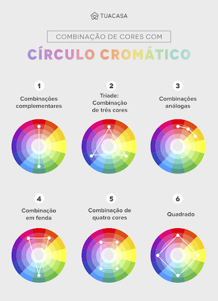

Círculo Cromático

O que é?
O círculo cromático é uma ferramenta fundamental na teoria das cores. Ele representa, de forma organizada, as relações entre as cores primárias, secundárias e terciárias. É como um mapa que nos ajuda a entender como combinar as cores de forma harmoniosa e criar diferentes efeitos visuais.
As cores primárias, secundárias e terciárias
- Cores primárias: São as cores básicas que não podem ser criadas pela mistura de outras cores. Elas são o ponto de partida para todas as demais cores. As cores primárias são o vermelho, o amarelo e o azul.
- Cores secundárias: Surgem da mistura de duas cores primárias em partes iguais. São o laranja (vermelho + amarelo), o verde (amarelo + azul) e o violeta (azul + vermelho).
- Cores terciárias: Resultantes da mistura de uma cor primária com uma cor secundária adjacente. Exemplos: vermelho-violeta, amarelo-verde, azul-verde, vermelho-laranja, amarelo-laranja e azul-violeta.
Tipos de harmonias de cores
- Análogas: Cores que estão lado a lado no círculo cromático. Criam um efeito suave e coeso.
- Complementares: Cores opostas no círculo cromático. Geram alto contraste e vibração visual.
- Tríades: Três cores equidistantes no círculo cromático. Criam um efeito vibrante e equilibrado.